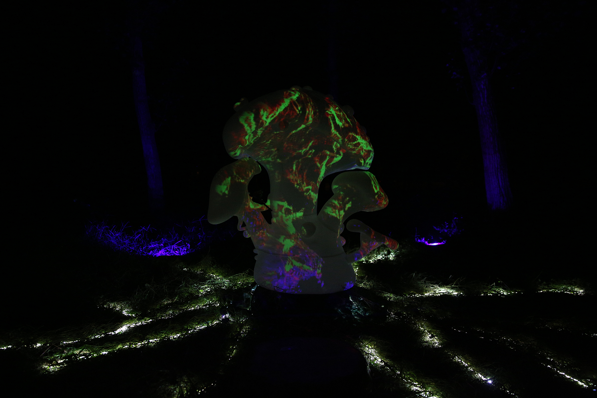
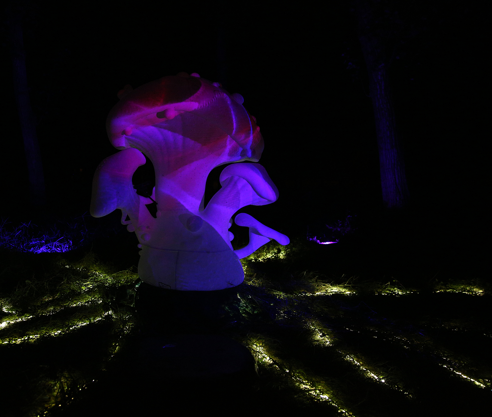
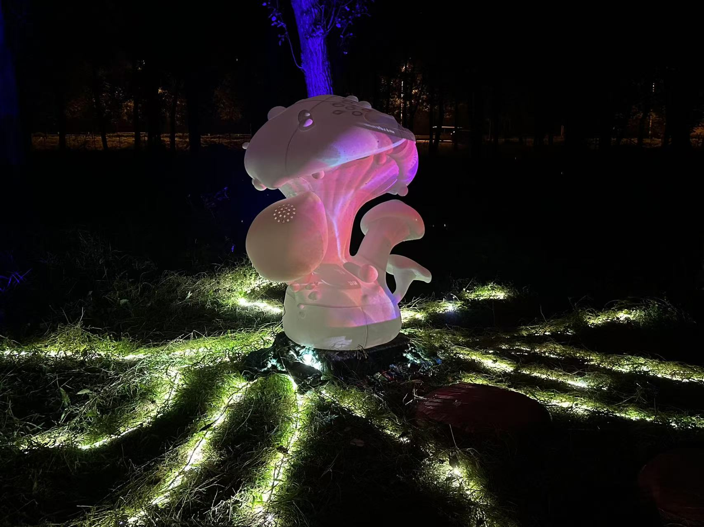
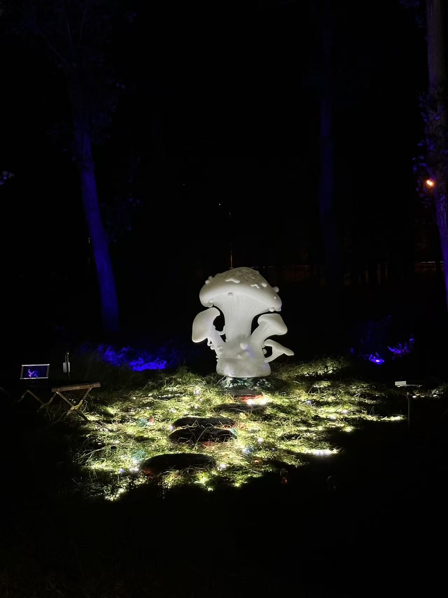
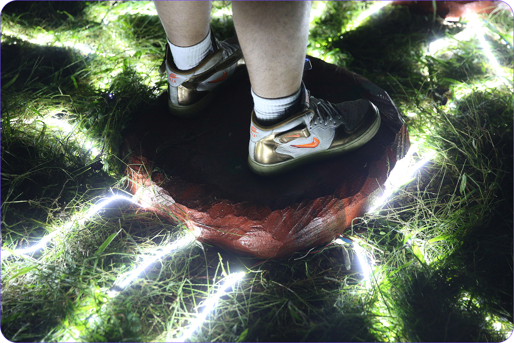
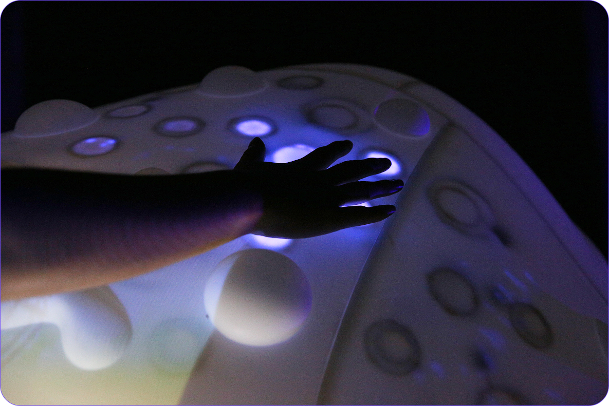
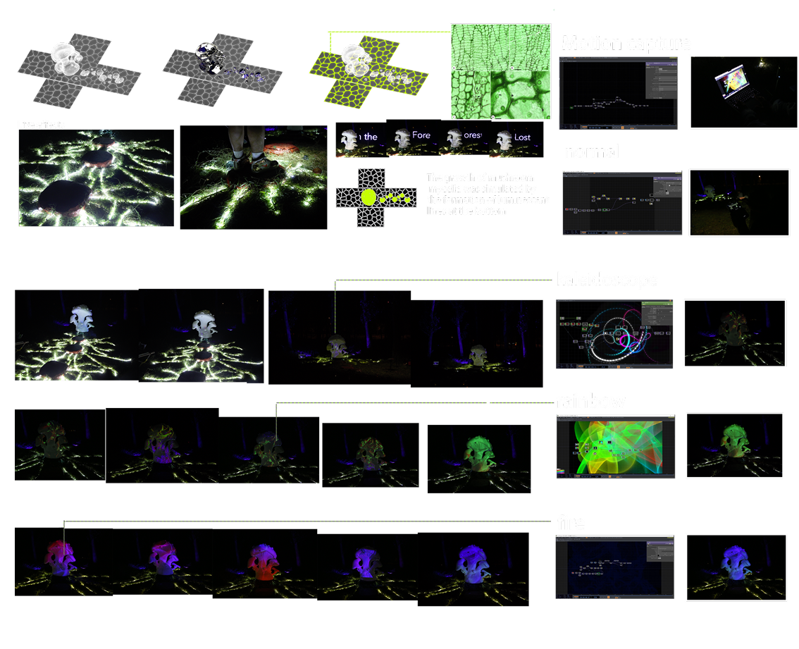
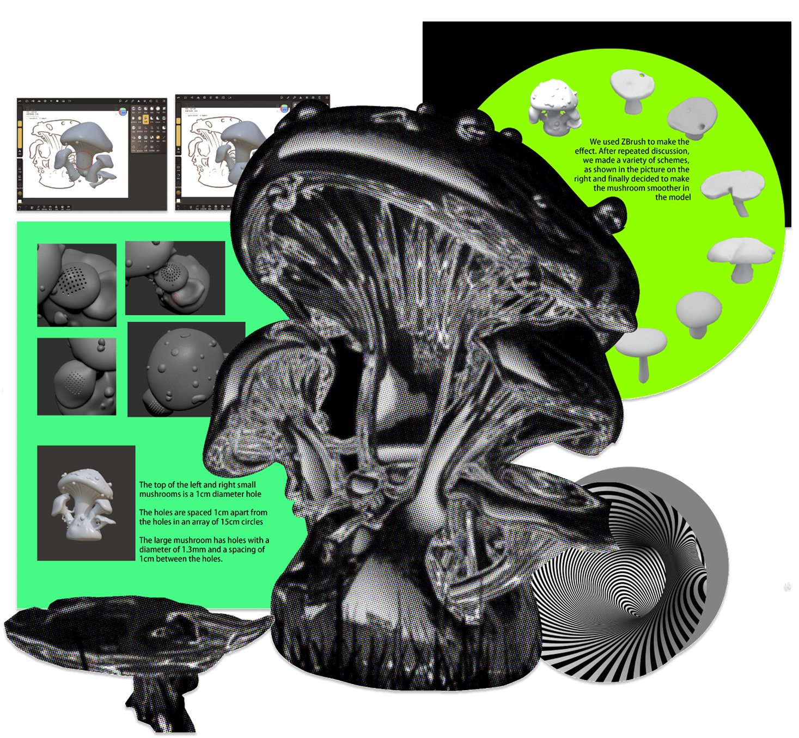

The Seventh Sense is an immersive installation that simulates the sensory distortion caused by toxic mushrooms.
By combining motion tracking and projection, the installation creates an unstable environment where perception becomes unreliable, inviting viewers into a controlled hallucinatory experience.







